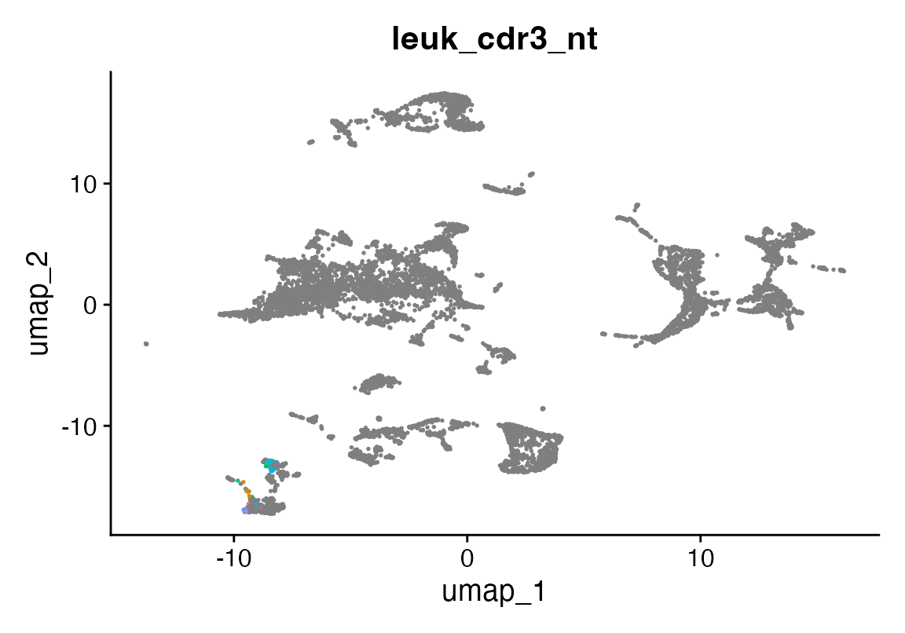
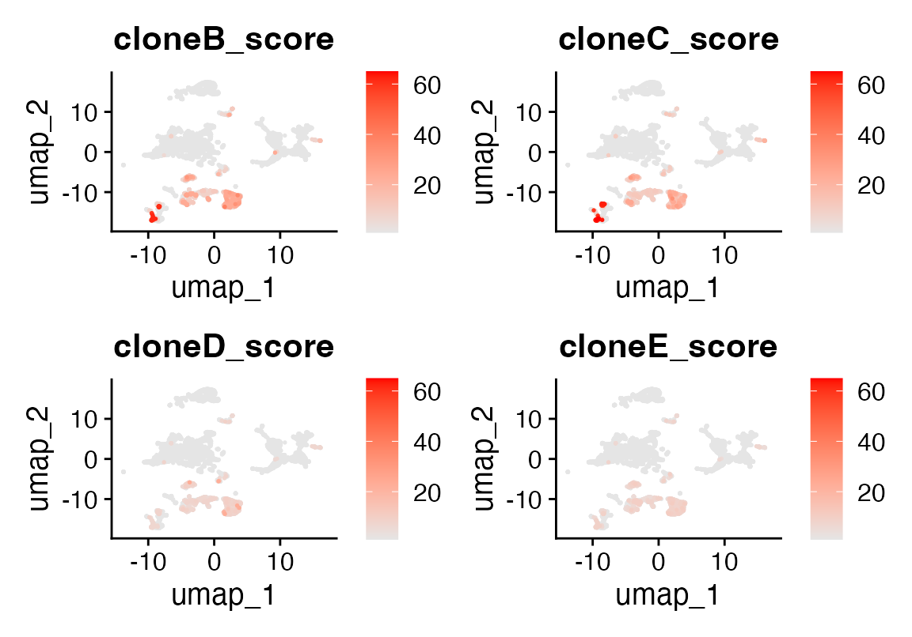
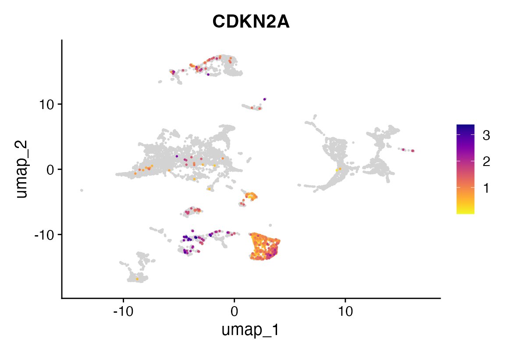

How to Perform Sequence Alignment
2024-06-04
seqAlign.RmdOverview
This vignette demonstrates how to perform pairwise sequence
alignment using Rust-backed tools in the
rustytools package. We apply this functionality to align
CDR3 nucleotide sequences from single-cell VDJ data and identify
leukemic clones in a suspected relapse of B-ALL. This is followed by
functional analysis, including expression of CDKN2A, to
validate biological distinctions.
Setup
We begin by loading the necessary libraries.
rm(list = ls())
suppressPackageStartupMessages({
library(rustytools)
library(Seurat)
library(scCustomize)
})Data Loading
We load the Seurat object for the patient sample (seu)
and a reference bone marrow dataset (seur). The reference
will provide color mappings for visualization.
seu <- readRDS("/Users/sfurlan/Library/CloudStorage/OneDrive-SharedLibraries-FredHutchinsonCancerCenter/Furlan_Lab - General/experiments/patient_marrows/ALL_5336/cds/240416_cds.RDS")
if (grepl("^gizmo", Sys.info()["nodename"])) {
ROOT_DIR2 <- "/fh/fast/furlan_s/grp/data/ddata/BM_data"
} else {
ROOT_DIR2 <- "/Users/sfurlan/Library/CloudStorage/OneDrive-SharedLibraries-FredHutchinsonCancerCenter/Furlan_Lab - General/datasets/Healthy_BM_greenleaf"
}
seur <- readRDS(file.path(ROOT_DIR2, "230329_rnaAugmented_seurat.RDS"))Visualizing VDJ Predictions
We plot the predicted cell types using vmR_pred and
color them according to the reference dataset.
DimPlot(seu, group.by = "vmR_pred", cols = seur@misc$colors)
Next, we highlight putative leukemic clones based on cluster identity:
seu$leuk_cdr3_nt <- NA
seu$leuk_cdr3_nt[seu$seurat_clusters %in% c(11, 13)] <- seu$cdr3_nt[seu$seurat_clusters %in% c(11, 13)]
DimPlot(seu, group.by = "leuk_cdr3_nt") + NoLegend()
Sequence Alignment with Rust
We align VDJ-derived sequences against known leukemic clones obtained
from Adaptive ClonoSEQ data. We use the
align() function from rustytools, which is
backed by the bio crate from Rust for high-performance
alignment.
# Adaptive-derived CDR3 sequences
cloneC <- "CAGGAACACCTCCATAAGCACAGCCTACATGGAGCTGAGCAGCCTGAGATCTGAGGACACGGCCGTGTATTACTGTGCGAGAGGCCTAACCCACACCCACCCCCTACTTATTGTAGTAGTACCAGCTGCTATGACTACTGGGGCCAGGGAACC"
cloneB <- "CGCGGACAAATCCACGAGCACAGCCTACATGGAGCTGAGCAGCCTGAGATCTGAGGACACGGCCGTGTATTACTGTGCGCGGCGGACTCCGTATTACTATGGTTCGGGGAGTTATACTACTACGGTATGGACGTCTGGGGCCAAGGGACC"
cloneD <- "GATGTTGGGGTTTATTACTGCATGCAAGGTACACACTGGCCCAACCTAGTGGCAGCCCAGGG"
cloneE <- "CTGATTATTACTGTGAGACCGGGACCAAGC"
# Compute alignment scores
seu$cloneC_score <- sapply(seu$cdr3_nt, function(seq) align(seq, cloneC, atype = "local", verbose = FALSE))
seu$cloneB_score <- sapply(seu$cdr3_nt, function(seq) align(seq, cloneB, atype = "local", verbose = FALSE))
seu$cloneD_score <- sapply(seu$cdr3_nt, function(seq) align(seq, cloneD, atype = "local", verbose = FALSE))
seu$cloneE_score <- sapply(seu$cdr3_nt, function(seq) align(seq, cloneE, atype = "local", verbose = FALSE))Alignment Results Visualization
We visualize the alignment scores on the UMAP embedding:
FeaturePlot(seu, features = c("cloneB_score", "cloneC_score", "cloneD_score", "cloneE_score"),
order = TRUE, keep.scale = "all",
cols = c("grey90", "red"), min.cutoff = "q20")
We can compare specific alignments with
Biostrings::pairwiseAlignment() to validate alignment
quality:
Biostrings::pairwiseAlignment(putative[1], cloneC, type = "global-local")## Global-Local PairwiseAlignmentsSingleSubject (1 of 1)
## pattern: TGTGCGAGATCAGAGAGGCCTAACCCACACCC...TTGTAGTAGTACCAGCTGCTATGACTACTGG
## subject: [74] TGTGCGAGA-------GGCCTAACCCACACCC...TTGTAGTAGTACCAGCTGCTATGACTACTGG
## score: 96.75946
Biostrings::pairwiseAlignment(putative[2], cloneB, type = "global-local")## Global-Local PairwiseAlignmentsSingleSubject (1 of 1)
## pattern: TGTGCGAGCTCAGGGGTATACCAC-----GCG...GGAGTTATACTACTACGGTATGGACGTCTGG
## subject: [50] TCTGAGGACACGGCCGTGTATTACTGTGCGCG...GGAGTTATACTACTACGGTATGGACGTCTGG
## score: 49.77611Functional Confirmation
To validate the leukemic identity of aligned cells, we visualize CDKN2A expression. Loss of CDKN2A is a known event in high-risk B-ALL and may support the leukemic phenotype of aligned cells.
FeaturePlot_scCustom(seu, features = "CDKN2A")
Conclusion
Using Rust-accelerated sequence alignment in rustytools,
we can rapidly screen thousands of VDJ sequences for similarity to
leukemic clones and validate findings through gene expression. This
approach is particularly useful in relapsed or ambiguous cases of B-ALL,
where clonal detection is critical.